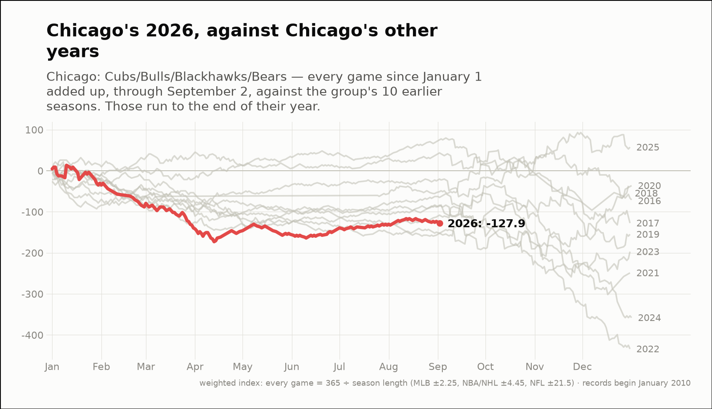
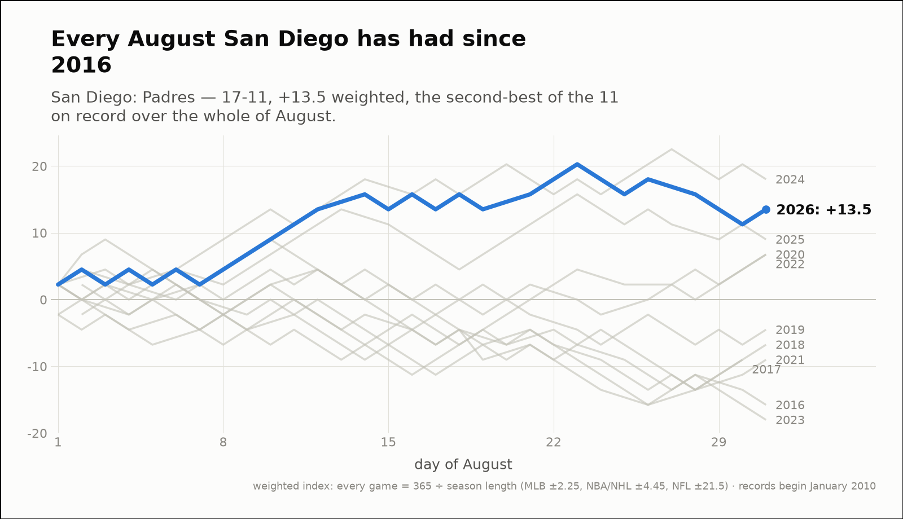
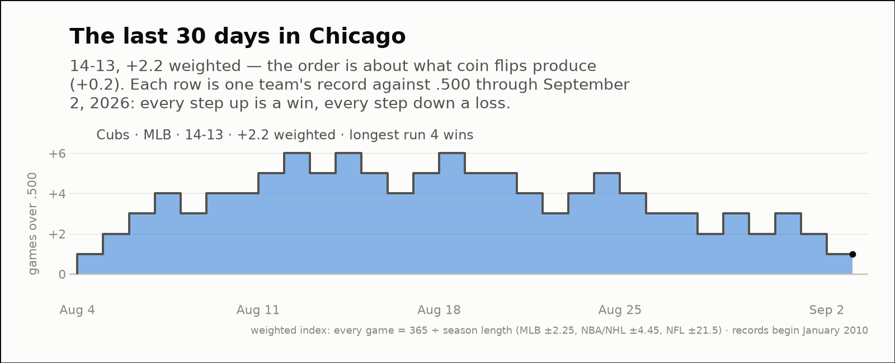

City of the day — Chicago
Chicago: Cubs/Bulls/Blackhawks/Bears
- 2026 so far
- 109-126, -127.9 weighted over 235 games; longest run 13 straight losses
- Order of results
- clumpier than chance (+2.4)
- Earlier seasons (full-year weighted)
- 2016 -70.9, 2017 -127.5, 2018 -36.7, 2019 -154.8, 2020 -36.2, 2021 -248.8, 2022 -434.0, 2023 -197.1, 2024 -357.8, 2025 +57.4
- Last 30 days
- 14-13, +2.2 weighted; longest run 4 straight wins
- Window opens
- August 4, 2026
| Team | Last 30 days | Weighted | Longest run |
|---|---|---|---|
| Cubs | 14-13 | +2.2 | 4 straight wins |


